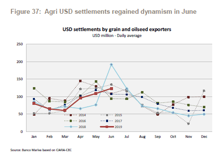
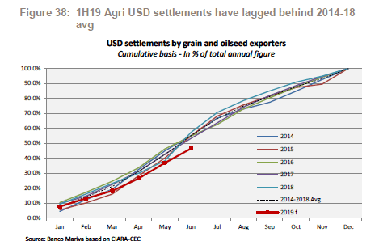
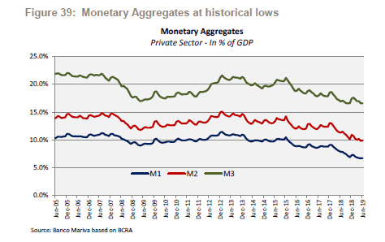
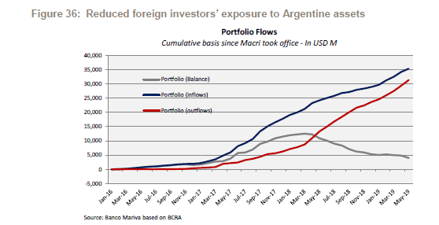

18 de Julio 2019
Finanzas
Gráficos que anticipan un escenario de tranquilidad cambiaria
Factores locales y globales que favorecen la estabilidad del tipo de cambio en los próximos meses, aún a pesar de la contienda electoral.
Amenos de un mes para las PASO, casi todos los argentinos se encuentran atentos a la evolución previa y posterior que pueda llegar a tener el dólar en las próximas semanas. Desde el mercado, estiman que la tranquilidad cambiaria podría mantenerse gracias a factores globales así como domésticos. El poder de fuego del BCRA. los mejores números del lado externo, la venta de dólares del agro y del Tesoro serian, entre otros, los fundamentos para pensar en un contexto de dólar calmo en los próximos meses.
Factores globales a favor del peso
Uno de los factores en los cuales se vislumbró un cambio realmente positivo a favor de las monedas en general y del peso en particular es lo referido a cuestiones financieras internacionales. Mas concretamente a los cambios de política monetaria de la Reserva Federal de Estados Unidos al comenzar a contemplar un escenario de bajas de tasas, descartando el contexto de suba de tasas, realizando así un giro de 180 grados respecto de lo que se esperaba a comienzo de 2019.
Justamente, los analistas de Portfolio Personal Inversiones remarcan que el contexto Internacional se encuentra apoyando al peso.
“La Fed prevé un recorte en la tasa de interés de EE.UU. de corto plazo que se encuentra entre 2.25% y 2.5%, ante la expectativa de desaceleración del crecimiento americano. Así, los mercados esperan con una probabilidad del 100% un recorte en la reunión del 31 de julio. Los inversores, están volando hacia el riesgo, y llevando a la apreciación de las monedas de mercados emergentes y a una depreciación del dólar -del orden del 0,7% en los últimos 30 días”, dijeron desde la compañía.
En términos generales, un escenario de tasas globales apuntando a la baja hace que los rendimientos de los activos en Estados Unidos tiendan a la baja, haciendo que los inversores a nivel global busquen retornos en otros mercados del mundo con mayores tasas de interés, típicamente los mercados emergentes. Invertir en ellos hace que los dólares fluyan hacia dichos países, sirviendo de soporte para el tipo de cambio. Un contexto de monedas emergentes sin volatilidad, ayuda a que la volatilidad del peso también sea menor.
Superávit Primario, resta presiones al dólar.
Otro de los factores que tiende a generar desequilibrios en el valor de la divisa es el elevado déficit fiscal y resultados primarios negativos acumulados en las distintas gestiones de gobierno. El hecho de contar con un resultado primario positivo hace que el equilibrio en el mercado cambiario tenga un mayor sustento.
“El superávit primario del primer semestre fue $ 30.221 millones, sobre cumpliendo la meta de $20.000 millones pautada con el FMI. La solidez fiscal está asociada a que los ingresos continúan creciendo, cada vez más cercanos a la inflación, y por encima del gasto primario. En el tercer trimestre la meta de superávit primario fue aumentada de $ 60.000 millones, a 70.000 millones”, explicaron los analistas de PPI.
Por otro lado, Adrian Yarde Buller, economista jefe de Grupo SBS sostuvo que, “con los números de junio el gasto primario acumula 18,5% del PBI en los últimos 12 meses, cayendo 5,6 puntos porcentuales desde 2016. Este enorme esfuerzo fiscal responde a una importante reducción del gasto flexible (3,9 puntos porcentuales), aunque también ayuda transitoriamente la aceleración de la inflación”.
Un operador de bonos de un banco ve con buenos ojos el hecho de que se reduzca las presiones sobre el déficit fiscal.
“Mejorar los números fiscales y primarios son una condición necesaria para reducir las presiones sobre el tipo de cambio. Ver números en positivo en materia de superávit primario hace que el tipo de cambio cuente con un factor negativo menos y genere un sendero de estabilidad hacia adelante. Estar posicionado en pesos tiene mas sentido cuando los números fiscales son positivos. Aun así, si bien los últimos números son buenos, seguimos estando a mitad de camino”, alertó.
Menor Déficit de Cuenta Corriente.
Por el lado externo, los números también apoyan a un contexto de tranquilidad cambiaria ya que permite pensar en que habrá mas cantidad de dólares privados en el mercado.
“El tránsito hacia el ahorro público (superávit primario), junto con la política monetaria estricta llevó hacia mayor ahorro privado que contrajo el gasto interno y de ahí a la reducción del déficit de cuenta corriente (DCC). En efecto, tras un DCC registrado en mayo de 2019 de u$s 21.000 millones se contrajo hasta u$s 1.882 millones en mayo de 2019”, sostuvieron desde PPI.
El superávit de bienes y servicios todo generado por el sector privado permitió casi cubrir a los intereses y utilidades, que en su mayoría son de orden público.
“Así este sector pasó de un déficit de u$s 11.922 millones (mayo 2018) compuesto por el saldo de bienes y servicios y utilidades netas, a un superávit de casi u$s 9.000 millones (mayo 2019). Dicho exceso de dólares privados apareció en el mercado, lleva a la tranquilidad del peso”, anticiparon los analistas de PPI.
Ingresos pendientes de agro dólares
Otro de los factores que podrían apoyar a un contexto de estabilidad cambiaria es el hecho de que la liquidación del agro aun no finalizó, por lo que aún quedan pendientes posibles ingresos futuros de divisas al mercado cambiario local.
“Aunque se proyecta que la producción de cultivos en 2019 alcanzará un nuevo récord, la liquidación del agro se quedaron por detrás de su promedio histórico. Durante los primeros cinco meses del año, el promedio diario de la liquidación de dólares provenientes del agro evolucionó muy por debajo del promedio de los últimos 5 años, recuperándose parcialmente en junio pasado”, explicaron desde Banco Mariva.
Sobre este punto, los analistas de la entidad estiman que durante el primer semestre del 2019 las liquidaciones en dólares solo representaron el 46,4% de la estimación que tenían para la totalidad de 2019 del orden de u$s 23,100 millones (supuesto del 80% de la cosecha valorizada), que compara con el promedio de 2014 a 2018 del orden del 55%.

“Esto representa una brecha de liquidaciones pendientes por casi u$s 2000 millones. Si bien es cierto que parte de esta diferencia se puede explicar por medio de que los agroexportadores pueden estar cancelando los gastos denominados en dólares en el extranjero, creemos que la brecha es considerable y anticipa que los flujos de entrada pendientes de dólares podrían impactar en el mercado en los próximos meses”, dijeron desde el equipo de Research de Banco Mariva.

Política Monetaria BCRA contractiva
La politica monetaria restrictiva por parte del BCRA busca desalentar la demanda de dólares, haciendo que haya menos pesos para comprarlos y elevando la tasa de interés en moneda local. De esta manera, sube el atractivo de estar en pesos y resta el interés por dolarizarse. Los analistas de PPI fueron categóricos al resaltar que el reverso del exceso de dólares esta dado que no hay pesos para comprarlos, por la rígida política monetaria del BCRA de congelar la Base Monetaria.
“Van nueve meses de cumplimiento de emisión cero, lo que está dando claros resultados en materia de tasas nominales, reales e inflación. Las tasas nominales aumentaron hasta mayo para luego iniciar una tendencia bajista con la caída del riesgo país Argentina, junto a la mejora de indicadores económicos. En un contexto de base monetaria cero y tasas reales positivas, la estabilidad cambiaria debiera llevar a esperar menor dolarización”, proyectaron desde PPI.
Por su parte, los analistas de Banco Mariva proyectan que, de acuerdo con el estricto objetivo del agregado monetario, la base monetaria continuará alcanzando mínimos históricos en los próximos meses, tanto en términos nominales como reales. Este proceso colabora en ver una menor presión dolarizadora en los próximos meses.
“Venimos señalando desde informes anteriores que este estricto esfuerzo de política apunta a atenuar la presión de la demanda de dólares (hasta ahora con éxito), al drenar continuamente la liquidez de pesos. Además, vale la pena señalar que los agregados monetarios más amplios se encuentran actualmente en mínimos históricos, lo que implica una reducción de los riesgos de dolarización”, dijeron.

Los dólares del Tesoro
Otro de los factores que juega a favor de continuar viendo una estabilidad cambiaria es el hecho de que, en forma diaria, el Tesoro se encuentra vendiendo divisas (por u$s 60 millones) en el mercado a través de licitaciones para poder hacer frente a sus obligaciones en pesos.
El monto total a vender de cara a los próximos meses hace anticipar un buen flujo de divisas que irán al mercado, elevando la oferta de dólares.
“Las ventas totalizarán u$s 9.600 millones, que empezaron a mitad de abril, acumulando ya un vendido en 61 días hábiles (hasta el 16/7) unos u$s 3.660 millones. En consecuencia, y hasta el 30 de noviembre, restan vender unos u$s5.940 millones”, dijeron desde PPI.
De esta manera, la venta pendiente de dólares por parte del tesoro seria otra fuente de divisas al mercado cambiario, permitiendo que el dólar pueda seguir encontrando estabilidad en las próximas semanas y meses.
La artillería del BCRA
Por otro lado, y en forma conjunta con las ventas de dólares del Tesoro, el BCRA se estuvo preparando para poder hacer frente a escenarios de volatilidad en el tipo de cambio, posicionándose en dólar futuro, junto con las reservas de libre disponibilidad.
Según los números de Portfolio Personal Inversiones, la autoridad monetaria podría vender Reservas de libre disponibilidad, que alcanzan unos u$s 21.000 millones (estimados). Además, el BCRA puede vender más de u$s 6.000 millones en futuros
“Otra herramienta del BCRA es operar en el mercado de dólar futuro con “permisos” del FMI. Sintéticamente, la autoridad vendió en marzo y abril, y entre mayo y junio dio vuelta la posición hasta llegar a u$s 2.760 millones (estimados) cuando el FMI le permite vender u4s 4.000 millones como promedio en los tres próximos meses. Ello significa un poder de fuego de u$s 6.000 millones a u$s 7.000 millones”, dijeron.
Los analistas de Mariva también resaltaron el mayor poder de fuego del BCRA para intervenir en el mercado cambiario como uno de los factores que favorece la tranquilidad en el dólar hacia adelante, más aun contemplando el calendario electoral.
“No se puede desconocer que los principales riesgos de una fuerte corrección cambiaria se mantienen profundamente ligados al ciclo político y riesgo electoral. En particular, destacamos que, de acuerdo a la evidencia histórica, la formación de activos externos tiende a acelerarse en años de elecciones presidenciales, particularmente cuatro meses antes de octubre”, advirtieron desde el equipo de Research de Banco Mariva.
Menor riesgo de salida de fondos
Dado que Argentina se encuentra inmersa en un mundo globalizado, dependiente de los flujos de capitales internacionales, detectar la debilidad que pueda llegar a sufrir ante posibles salidas de fondos representa un factor clave para medir la estabilidad del dólar.
En el informe trimestral de Banco Mariva analizan los flujos de capitales en Argentina, (que fue uno de los factores desencadenantes de la crisis cambiaria de 2018), y destacan que las entradas netas acumuladas desde que Macri asumió el cargo continuaron disminuyendo en el último trimestre.
“Los ingresos netos de capitales actualmente se ubican un 70% por debajo del máximo alcanzado en marzo 2018. Esto indica un desbordamiento negativo más limitado de un posible episodio disruptivo de tipo de cambio, ya que estas cifras confirman que el posicionamiento de los inversores internacionales es más ligero”, sostuvieron.
En concreto, si el posicionamiento en activos argentinos por parte de inversores internacionales es menor, el riesgo de salida de los mismos también lo es y por lo tanto, los riesgos de dolarización se reducen.

Leé la nota completa en El Cronista
Enlaces de interés